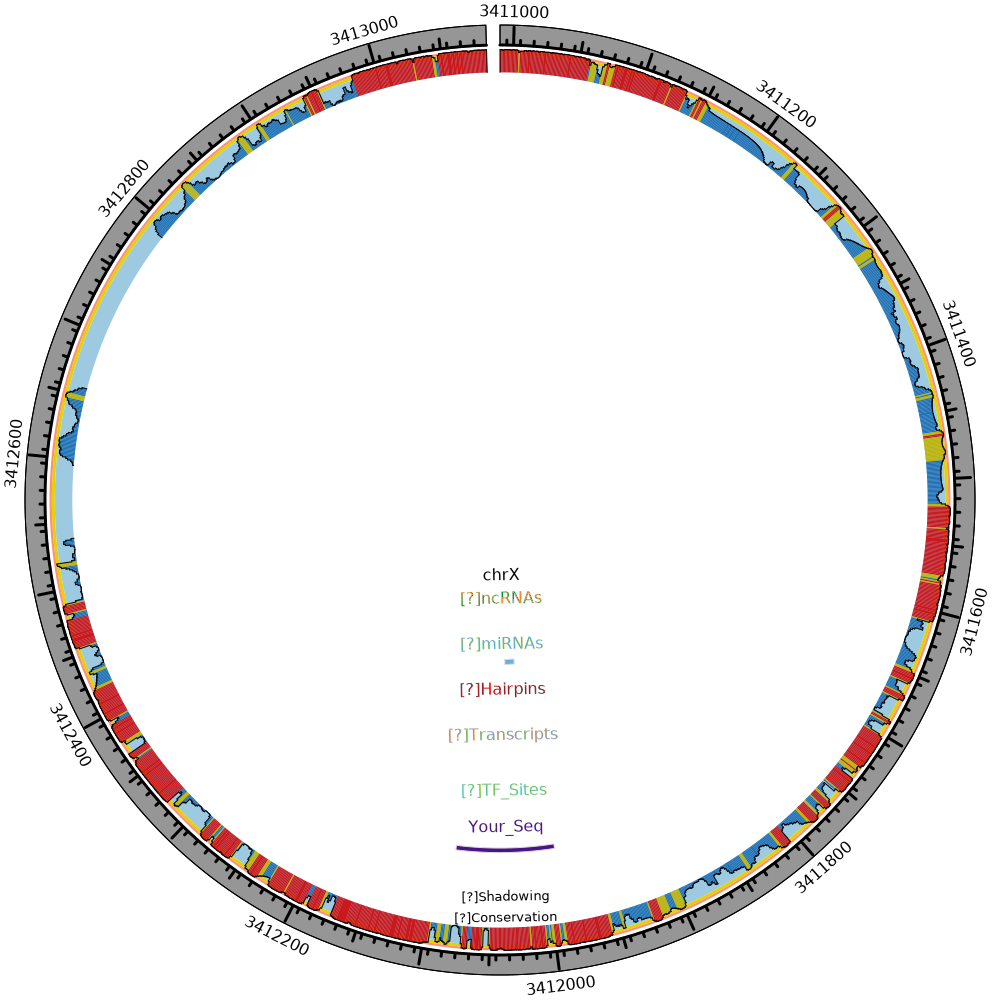

Result of cel-mir-271 MI0000351
mir-like hairpin prediction:
None
Result Visualization:

Sequence No.:
1
Your inquiry sequence BLAST:
Query Region: 1-95
Target: chrX:3411990-3412084:+
Which transcripts overlap your inquiry sequence? (UCSC Genome Browser)
None
Which transcription factor binding sites potentially regulate your inquiry sequence?
None
Which miRs are nearby your inquiry sequence? (miRBase)
MIMAT0000327:cel-miR-271:chrX:3412013-3412032:+
Does your inquiry sequence hit a non-coding RNA? (Rfam):
NA